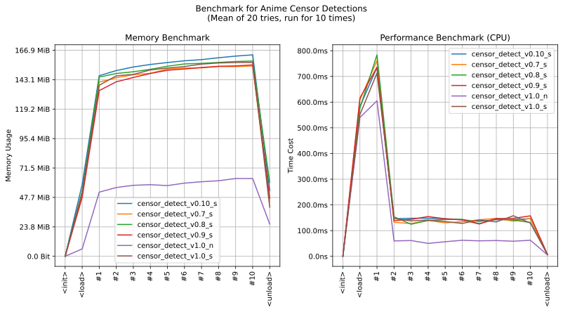

imgutils.detect.censor
- Overview:
Detect human censor points (including female’s nipples and genitals of both male and female) in anime images.
Trained on dataset deepghs/anime_censor_detection with YOLOv8.
Overview of Censor Detect (NSFW Warning!!!)

This is an overall benchmark of all the censor detect models:

detect_censors
- imgutils.detect.censor.detect_censors(image: str | PathLike | bytes | bytearray | BinaryIO | Image, level: str = 's', version: str = 'v1.0', model_name: str | None = None, conf_threshold: float = 0.3, iou_threshold: float = 0.7) List[Tuple[Tuple[int, int, int, int], str, float]][source]
Detect human censor points in anime images.
This function uses pre-trained YOLOv8 models to identify and locate specific anatomical features that are typically censored in anime images. It can detect female nipples, male genitals, and female genitals.
- Parameters:
image (ImageTyping) – The input image to be analyzed. Can be a file path, URL, or image data.
level (str) – The model level to use, either ‘s’ (standard) or ‘n’ (nano). The ‘n’ model is faster but less accurate, while ‘s’ is more accurate but slower.
version (str) – The version of the model to use. Default is ‘v1.0’.
model_name (Optional[str]) – Optional custom model name. If not provided, it will be constructed from the version and level.
conf_threshold (float) – The confidence threshold for detections. Only detections with confidence above this value will be returned. Default is 0.3.
iou_threshold (float) – The Intersection over Union (IoU) threshold for non-maximum suppression. Detections with IoU above this value will be merged. Default is 0.7.
- Returns:
A list of tuples, each containing: - A tuple of four integers (x0, y0, x1, y1) representing the bounding box - A string indicating the type of detection (‘nipple_f’, ‘penis’, or ‘pussy’) - A float representing the confidence score of the detection
- Return type:
List[Tuple[Tuple[int, int, int, int], str, float]]
- Raises:
ValueError – If an invalid level is provided.
RuntimeError – If the model fails to load or process the image.
- Examples::
>>> from imgutils.detect import detect_censors, detection_visualize >>> >>> image = 'nude_girl.png' >>> result = detect_censors(image) # detect it >>> result [ ((365, 264, 399, 289), 'nipple_f', 0.7473511695861816), ((224, 260, 252, 285), 'nipple_f', 0.6830288171768188), ((206, 523, 240, 608), 'pussy', 0.6799028515815735) ] >>> >>> # visualize it >>> from matplotlib import pyplot as plt >>> plt.imshow(detection_visualize(image, result)) >>> plt.show()